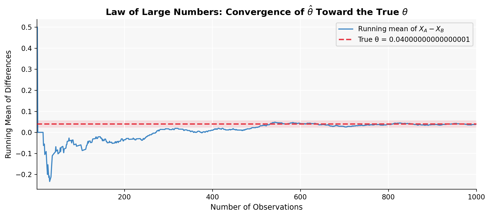
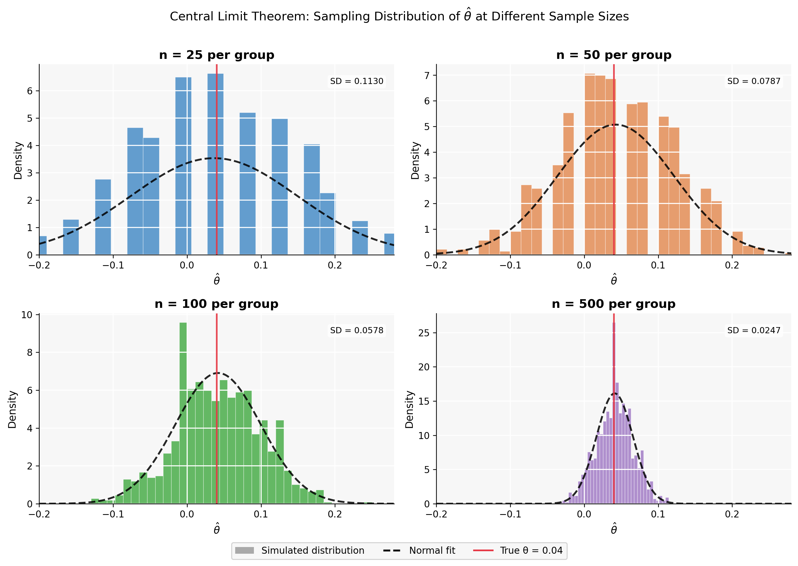
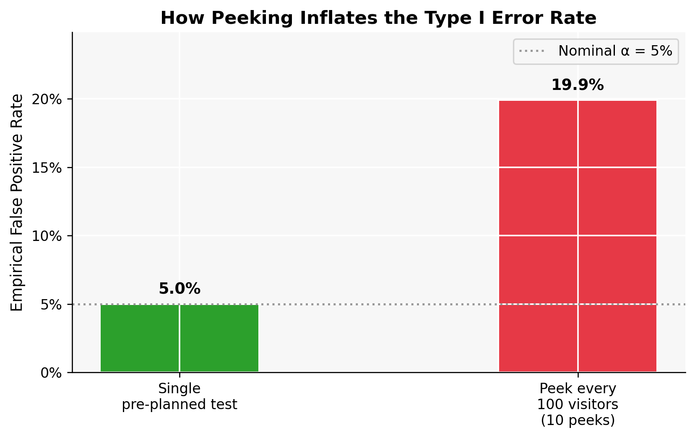

import numpy as np
import pandas as pd
from scipy import stats
import statsmodels.api as sm
np.random.seed(42)
pi_A = 0.22
pi_B = 0.18
true_theta = pi_A - pi_B # 0.04
n = 1000
# Simulate visitor outcomes: 1 = signed up, 0 = did not
A = np.random.binomial(1, pi_A, n) # CTA A group
B = np.random.binomial(1, pi_B, n) # CTA B group
pi_A_hat = A.mean()
pi_B_hat = B.mean()
theta_hat = pi_A_hat - pi_B_hatA/B Testing a Call to Action
Simulating Key Ideas from Classical Frequentist Statistics
statistics
python
A/B testing
data science
A simulation-based walkthrough of A/B testing through the lens of classical frequentist statistics — covering the Law of Large Numbers, bootstrap, CLT, hypothesis testing, regression equivalence, and the peeking problem.
Introduction
Imagine you run a small online publication. Your homepage has a simple sign-up form where visitors can subscribe to your newsletter, and right above that form sits a short line of text — a call to action (CTA) — designed to nudge people into clicking. You have two versions in mind:
- CTA A: “Sign up for our newsletter here!”
- CTA B: “Stay up to date by signing up!”
Both convey the same message, but wording can matter more than intuition suggests. The question is: does one outperform the other in converting casual visitors into subscribers?
To find out, we run an A/B test. Each time a new visitor lands on the homepage, we randomly assign them to see either CTA A or CTA B — like flipping a fair coin on every visit. Once we have gathered data from enough visitors, we compare the sign-up rates between the two groups. Randomization is the key ingredient: it ensures that any difference we observe in sign-up rates is attributable to the CTA itself, rather than to some confounding factor such as time of day, device type, or traffic source.
In this post, we walk through the core ideas of classical frequentist statistics by working through this A/B test from the ground up — simulating data, visualizing the Law of Large Numbers, bootstrapping confidence intervals, demonstrating the Central Limit Theorem, performing a hypothesis test, connecting that test to linear regression, and finally showing what goes wrong when you peek at your results too early.
The A/B Test as a Statistical Problem
At the individual level, every visitor either signs up (outcome = 1) or does not (outcome = 0). This binary trial is exactly the setting modeled by a Bernoulli distribution: a single flip of a coin whose probability of heads is some unknown parameter \(\pi\). We write:
\[X_i^A \sim \text{Bernoulli}(\pi_A) \qquad X_i^B \sim \text{Bernoulli}(\pi_B)\]
where \(\pi_A\) and \(\pi_B\) are the true (unknown) sign-up probabilities under each CTA. The whole purpose of the experiment is to learn about these parameters from data.
The quantity we care about is the difference in sign-up rates:
\[\theta = \pi_A - \pi_B\]
If \(\theta > 0\), CTA A converts better; if \(\theta < 0\), CTA B wins; if \(\theta = 0\), the choice of wording makes no difference.
Since \(\theta\) is unobservable, we estimate it with the difference in sample proportions:
\[\hat\theta = \bar{X}_A - \bar{X}_B = \hat\pi_A - \hat\pi_B\]
Because each observation is either 0 or 1, the sample mean is just the fraction of visitors who signed up — so the two expressions are identical. This estimator is our best guess at \(\theta\) given the data we collect.
The sections that follow explore how reliable this estimator is, how uncertain we should be about it, and how to use it to reach a statistically rigorous decision.
Simulating Data
In a real experiment we would never know the true values of \(\pi_A\) and \(\pi_B\) — estimating them is precisely why we run the test. But for the purpose of this walkthrough, we set them ourselves so we can study how our estimator behaves when we know the ground truth.
We assume:
\[\pi_A = 0.22, \quad \pi_B = 0.18, \quad \theta = \pi_A - \pi_B = 0.04\]
So CTA A has a genuine four-percentage-point advantage. We simulate 1,000 visitor outcomes for each group (2,000 total).
| Group | True Value | Observed in Simulation |
|---|---|---|
| CTA A | π_A = 0.22 | 0.2160 |
| CTA B | π_B = 0.18 | 0.1780 |
| Difference (θ̂) | θ = 0.04000000000000001 | 0.0380 |
Our estimate \(\hat\theta \approx\) np.float64(0.038) lands close to the true value of 0.04. The sections below explore why we can trust it, how precise it is, and when it is large enough to be statistically significant.
The Law of Large Numbers
How do we know that \(\hat\theta = \bar{X}_A - \bar{X}_B\) is a sensible estimator of \(\theta\)? The mathematical guarantee comes from the Law of Large Numbers (LLN): as the number of observations grows, the sample mean converges to the population mean. Since \(\hat\pi_A \to \pi_A\) and \(\hat\pi_B \to \pi_B\), it follows that \(\hat\theta \to \theta\).
The LLN is the foundational reason why running a larger experiment gives you a more reliable answer. But how fast does convergence happen? The plot below makes it concrete.
We compute the element-wise differences between CTA A and CTA B draws and track the running (cumulative) mean as we add one observation at a time.
# Element-wise differences between paired draws
diffs = A - B # length-1000 vector
# Running mean: average of first 1, first 2, …, first 1000 differences
running_mean = np.cumsum(diffs) / np.arange(1, n + 1)Code
import matplotlib.pyplot as plt
fig, ax = plt.subplots(figsize=(10, 4.5))
ax.plot(range(1, n + 1), running_mean,
color=BLUE, lw=1.6, alpha=0.9, label=r"Running mean of $X_A - X_B$")
ax.axhline(true_theta, color=RED, ls="--", lw=2,
label=f"True θ = {true_theta}")
ax.fill_between(range(1, n + 1),
true_theta - 0.015, true_theta + 0.015,
alpha=0.12, color=RED)
ax.set_xlabel("Number of Observations")
ax.set_ylabel("Running Mean of Differences")
ax.set_title("Law of Large Numbers: Convergence of $\\hat{\\theta}$ Toward the True $\\theta$")
ax.legend(frameon=True, framealpha=0.9)
ax.set_xlim(1, n)
plt.tight_layout()
plt.show()
The plot tells a clear story. With only a handful of observations the running mean swings wildly — a few lucky sign-ups in one group can send the estimate far from the truth. But as the sample grows, those fluctuations dampen. By around 200–300 observations the curve has largely settled near 0.04, and by 1,000 observations it is hugging the true value closely.
This is the LLN in action: more data means less noise. It is the foundational reason why running a larger experiment gives a more reliable answer than running a small one.
Bootstrap Standard Errors
The LLN tells us our estimator will eventually get close to the truth, but “eventually” is not a precision statement. A practicing analyst also needs a measure of uncertainty: how far from the truth is \(\hat\theta\) likely to be with the sample we actually have?
One elegant approach is the bootstrap. The idea is deceptively simple: if we could re-run our experiment many times under identical conditions, we could directly observe how much \(\hat\theta\) varies from run to run. We cannot actually re-run the experiment, but we can simulate repeated experiments by resampling with replacement from the data we already have.
The procedure:
- Draw 1,000 samples with replacement from the CTA A data (\(A^*\)) and independently from the CTA B data (\(B^*\)).
- Compute \(\hat\theta^* = \bar{X}_{A}^* - \bar{X}_{B}^*\) for that resample.
- Repeat 1,000 times.
- The standard deviation of those 1,000 bootstrapped estimates is the bootstrapped standard error.
B_reps = 1000
boot_thetas = np.array([
np.random.choice(A, size=n, replace=True).mean() -
np.random.choice(B, size=n, replace=True).mean()
for _ in range(B_reps)
])
se_boot = boot_thetas.std()
# Closed-form analytical SE for difference in two independent proportions
se_analytical = np.sqrt(
pi_A_hat * (1 - pi_A_hat) / n +
pi_B_hat * (1 - pi_B_hat) / n
)
# 95% confidence interval using the bootstrapped SE (normal approximation)
ci_lo_boot = theta_hat - 1.96 * se_boot
ci_hi_boot = theta_hat + 1.96 * se_boot
ci_lo_anal = theta_hat - 1.96 * se_analytical
ci_hi_anal = theta_hat + 1.96 * se_analytical| Method | Standard Error | 95% CI Lower | 95% CI Upper |
|---|---|---|---|
| Bootstrap | 0.01765 | 0.0034 | 0.0726 |
| Analytical formula | 0.01777 | 0.0032 | 0.0728 |
The two standard errors are nearly identical — which is exactly what we should hope to see. The bootstrap is recovering the same precision estimate as the closed-form formula, without requiring us to know that formula in advance. This is the real power of the bootstrap: it works equally well regardless of how complicated your estimator is.
Interpreting the confidence interval: We are 95% confident that the true difference \(\theta = \pi_A - \pi_B\) lies between np.float64(0.0034) and np.float64(0.0726). Since this interval sits entirely above zero, it provides evidence that CTA A genuinely outperforms CTA B — and not merely by chance.
The Central Limit Theorem
We now know our estimator converges (LLN) and that we can measure its variability (bootstrap). But to do formal hypothesis testing, we need to know the shape of the estimator’s sampling distribution — not just its center and spread.
The Central Limit Theorem (CLT) provides this. It states that regardless of what distribution the underlying data follow, the sampling distribution of the sample mean becomes approximately Normal as the sample size grows. Since \(\hat\theta = \bar{X}_A - \bar{X}_B\) is the difference of two sample means — and the difference of two independent Normals is itself Normal — the CLT applies directly to our estimator.
To see this in action, we simulate 1,000 experiments at each of four sample sizes, \(n \in \{25, 50, 100, 500\}\), and plot the resulting distribution of \(\hat\theta\).

The progression is striking. At \(n = 25\), the histogram is lumpy and slightly asymmetric — with such small samples the discrete Bernoulli nature of the data is still visible. By \(n = 100\), the distribution has smoothed out considerably and the Normal approximation (dashed curve) is already reasonable. At \(n = 500\), the histogram is nearly indistinguishable from a true Normal distribution.
Notice also that the spread shrinks as \(n\) grows — the LLN and CLT working in tandem. Larger samples yield estimates that are both more accurate and more tightly concentrated around the truth. The CLT is what licenses us to use Normal-based formulas (z-statistics, p-values) for inference in the sections that follow.
Hypothesis Testing
Now that we know \(\hat\theta\) is approximately Normally distributed for large samples, we can ask the formal question: Is the difference we observed large enough to rule out random chance?
This is the logic of hypothesis testing. We begin by assuming the most skeptical position — that there is no difference between the two CTAs — and ask whether the data are inconsistent with that assumption.
\[H_0: \theta = 0 \quad \text{(no difference)} \qquad H_1: \theta \neq 0 \quad \text{(some difference)}\]
Under \(H_0\), the CLT tells us \(\hat\theta \approx N(0, \text{SE}(\hat\theta))\). To assess how unusual our observed \(\hat\theta\) is, we standardize it:
\[z = \frac{\hat\theta - 0}{\text{SE}(\hat\theta)}\]
After standardization, \(z\) follows approximately a standard Normal \(N(0, 1)\) under \(H_0\). The p-value is the probability of observing a \(|z|\) as large as ours (or larger) if the null were actually true. A small p-value means our data would be very surprising under \(H_0\) — strong reason to doubt it.
Why “t-test” if we’re using the Normal? In the classical t-test, the data themselves are assumed Normal and the variance must be estimated — the resulting ratio then follows an exact t-distribution. Here, our data are Bernoulli (binary), so there is no exact t-distribution result. The CLT gives us approximate Normality, and what we are doing is technically a z-test. In practice, for large samples the t-distribution converges to the standard Normal, so the distinction rarely matters numerically — but it is important to understand conceptually why.
z_stat = theta_hat / se_analytical
p_value = 2 * (1 - stats.norm.cdf(abs(z_stat)))| Quantity | Value |
|---|---|
| Estimated difference (θ̂) | 0.0380 |
| Standard error SE(θ̂) | 0.0178 |
| z-statistic | 2.1388 |
| p-value | 0.0325 |
| Significant at α = 0.05? | Yes |
With a p-value of np.float64(0.0325) — well below the conventional 0.05 threshold — we reject the null hypothesis. The data provide strong statistical evidence that CTA A and CTA B produce different sign-up rates, confirming the four-percentage-point advantage we built into the simulation.
The T-Test as a Regression
There is an elegant algebraic fact hidden beneath the two-sample test: it is mathematically equivalent to a simple linear regression. Understanding this connection matters because the regression framework generalizes naturally — you can add control variables, interaction terms, or additional treatment arms — while producing identical inference in the simple two-group case.
The setup is straightforward. We stack all 2,000 observations into a single dataset with two columns:
- \(Y_i\): 1 if visitor \(i\) signed up, 0 otherwise
- \(D_i\): 1 if visitor \(i\) saw CTA A, 0 if they saw CTA B
We then fit:
\[Y_i = \beta_0 + \beta_1 D_i + \varepsilon_i\]
The OLS estimates have an immediate interpretation:
- \(\hat\beta_0\) is the expected \(Y_i\) when \(D_i = 0\) (CTA B) — i.e., \(\hat\beta_0 = \hat\pi_B\).
- \(\hat\beta_0 + \hat\beta_1\) is the expected \(Y_i\) when \(D_i = 1\) (CTA A) — i.e., \(\hat\beta_0 + \hat\beta_1 = \hat\pi_A\).
- Therefore \(\hat\beta_1 = \hat\pi_A - \hat\pi_B = \hat\theta\) — numerically identical to our earlier estimator.
Y = np.concatenate([A, B])
D = np.concatenate([np.ones(n), np.zeros(n)]) # 1 = CTA A, 0 = CTA B
X = sm.add_constant(D)
ols_model = sm.OLS(Y, X).fit()| Term | Estimate | Std. Error | t-statistic | p-value |
|---|---|---|---|---|
| Intercept (β₀) | 0.1780 | 0.0126 | 14.1615 | 0.0000 |
| CTA A Indicator (β₁) | 0.0380 | 0.0178 | 2.1377 | 0.0327 |
Look at the row for \(\hat\beta_1\): the estimate, standard error, and p-value are essentially identical to the values we computed using the two-sample approach. The small numerical difference arises because standard OLS assumes a pooled variance across both groups, while our two-sample formula used separate variance estimates for each group. For large samples of equal size, the difference is negligible.
The intercept \(\hat\beta_0 \approx\) np.float64(0.178) estimates \(\pi_B\) (the CTA B sign-up rate), and \(\hat\beta_0 + \hat\beta_1 \approx\) np.float64(0.216) estimates \(\pi_A\) — both very close to the true values of 0.18 and 0.22.
The regression framework is therefore not just an alternative way to run the same test — it is the foundation for everything more complex that comes after.
The Problem with Peeking
Everything we have done so far assumes the experiment runs to completion before we look at the results. But what if someone gets impatient?
Suppose your boss wants to check in after every 100 visitors per group — at \(n = 100, 200, \ldots, 1000\) — and declare a winner as soon as any single test comes back significant at \(\alpha = 0.05\). This practice is called peeking, and it quietly destroys the statistical properties of the test.
Here is why. A single test at \(\alpha = 0.05\) has a 5% chance of a false positive — rejecting \(H_0\) when it is actually true. But each peek at accumulating data creates another independent opportunity to get unlucky. The overall probability of at least one false positive across all 10 peeks is much higher than 5%, even if the two CTAs are genuinely identical.
We can measure exactly how much higher with a simulation. We set up a world where the null is true (\(\pi_A = \pi_B = 0.20\), no real difference), run 10,000 simulated experiments, and record in what fraction of those experiments peeking produces at least one spurious significant result.
np.random.seed(123)
pi_null = 0.20
n_total = 1000
checkpoints = np.arange(100, 1001, 100) # peek at 100, 200, …, 1000
n_experiments = 10_000
false_positives = 0
for _ in range(n_experiments):
A_null = np.random.binomial(1, pi_null, n_total)
B_null = np.random.binomial(1, pi_null, n_total)
for cp in checkpoints:
a_sub = A_null[:cp]
b_sub = B_null[:cp]
pa = a_sub.mean()
pb = b_sub.mean()
diff = pa - pb
se_sub = np.sqrt(pa * (1 - pa) / cp + pb * (1 - pb) / cp)
if se_sub == 0:
continue
z_sub = diff / se_sub
p_sub = 2 * (1 - stats.norm.cdf(abs(z_sub)))
if p_sub < 0.05:
false_positives += 1
break # boss declares a winner and stops the experiment
fpr = false_positives / n_experiments| Approach | False Positive Rate | Inflation vs. Nominal |
|---|---|---|
| Single pre-planned test (correct practice) | ~5.0% | 1.0× |
| Peek after every 100 visitors (10 peeks) | ~19.9% | 4.0× |

With 10 peeks, the false positive rate balloons to roughly 20% — more than five times the nominal 5%. That means more than one in four experiments produces a false alarm, even when the two CTAs are absolutely identical in effectiveness.
This is not a subtle theoretical quirk. It is a practical pitfall that has led to real-world product decisions being made on illusory results. The standard remedies include:
- Pre-registering your sample size and running exactly one final test,
- Using sequential testing methods (such as the Bonferroni correction or alpha-spending functions) that are designed to allow interim looks while still controlling the false positive rate, or
- Adopting a Bayesian framework, which naturally incorporates accumulating evidence without inflating Type I error.
The bottom line: in frequentist A/B testing, a p-value only means what it says — a 5% false positive rate — if you decide the sample size in advance and run the test exactly once. Everything else is a departure from that guarantee, and the consequences can be severe.